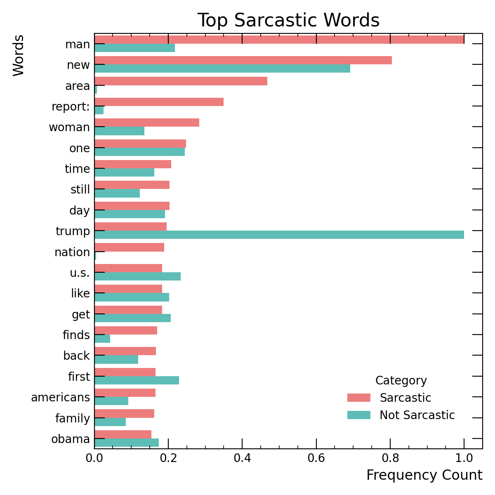
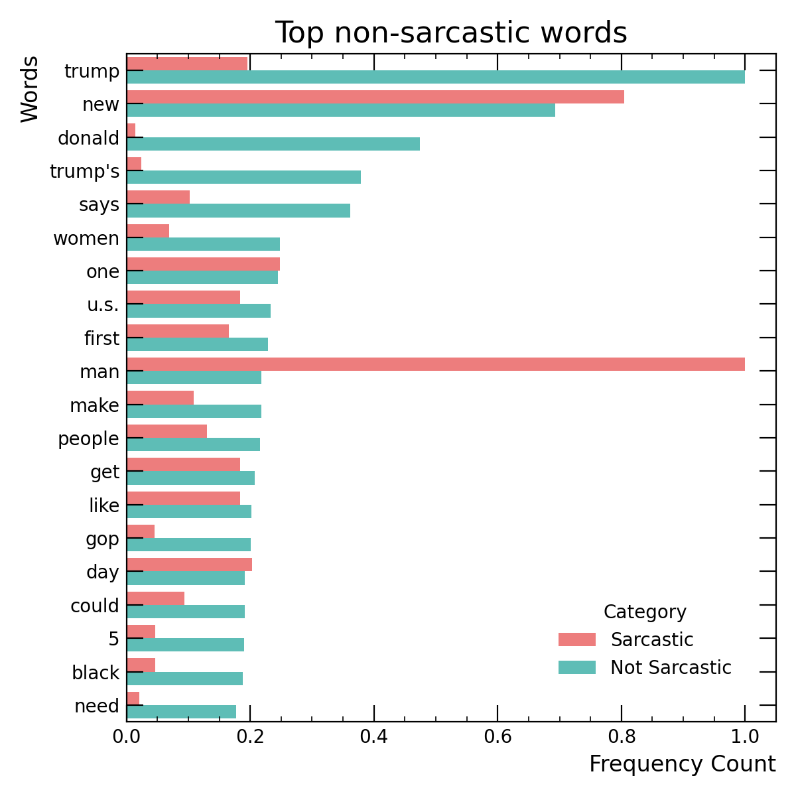

This repository studies improvements in generalization of fine-tuned BERT models on sarcasm detection. The sarcasm detection dataset used consists of headlines from The Onion and HuffPost. The distribution of individual features in the data was highly skewed: for example, the words "Donald" or "Trump" almost exclusively occured in the HuffPost headlines, and rarely in headlines from The Onion. Of course, this may lead to a model which predicts any sentence referencing Donald Trump to not be sarcastic, while some of them may be. In order to address this, the dataset was weighted to balance the individual feature frequency across the headlines from The Onion and HuffPost. Then, the two trained models were compared on a dataset of headlines from a sibling publication of The Onion, Clickhole, to test if any improvement in Trump-centric sarcasm was measured.
The main questions addressed were:


Figure 1:
The findings suggest that generalization was improved when the weighted dataset was used. The F1 score on the original dataset was simultaneously improved, suggesting that rather than picking up on individual features the BERT model fine-tuned with weights is more likely to extract higher level meaning from the dataset.